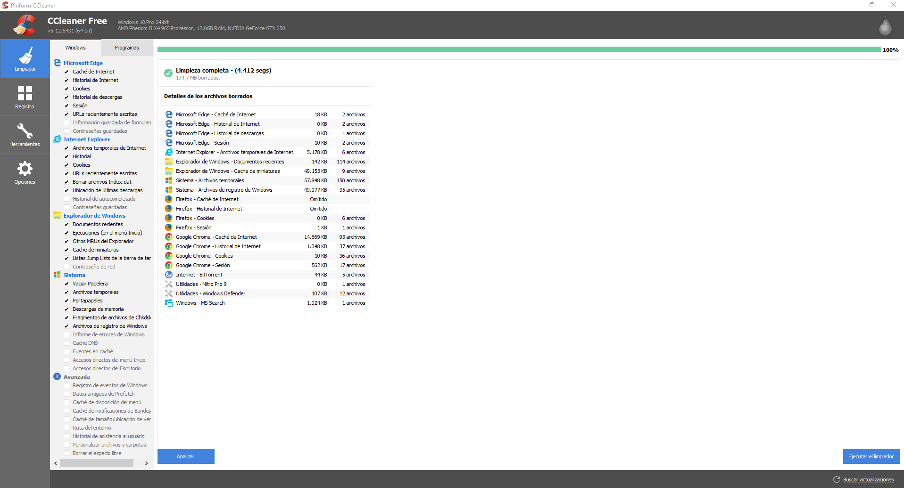
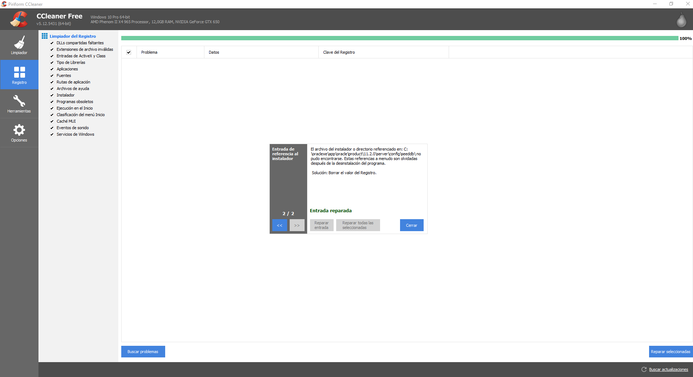

¿Qué es?¿Para qué sirve?
Un PC produce mucha basura informática , como pueden ser los datos residuales, cachés de navegadores, cookies, archivos mal borrados y huellas que, además de ocupar espacio inútilmente, ponen en riesgo tu privacidad.
¿Solución?
Los programas limpiadores ,son los barrenderos del sistema operativo. Se encargan de pasar la escoba por el disco duro y recolectar todo tipo de trazas y archivos inservibles.
Ahora llegamos al programa en cuestión "CCleaner".
CCleaner es el limpiador de Windows que muchos de nosotros usamos regularmente. Además de su escáner de archivos basura, tiene un limpiador de Registro y útiles herramientas, como un desinstalador y un editor de inicio. Tiene versión portable y está traducido a muchos idiomas (español incluido).
Su aspecto es limpio y agradable como veremos en la siguiente imagen:
|  |  |
|---|